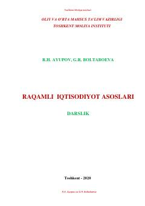

RIRaqamli iqtisodiyot va elektron tijorat asoslari bo'yicha mukammal darslik.
Ushbu darslik raqamli iqtisodiyotning nazariy asoslari, elektron tijorat va biznes modellarini atroflicha yoritib beradi. Unda blokcheyn, sun'iy intellekt, kriptovalyutalar va bulutli texnologiyalar kabi zamonaviy innovatsiyalarning iqtisodiyotdagi o'rni hamda xavfsizlik masalalari tahlil qilingan.